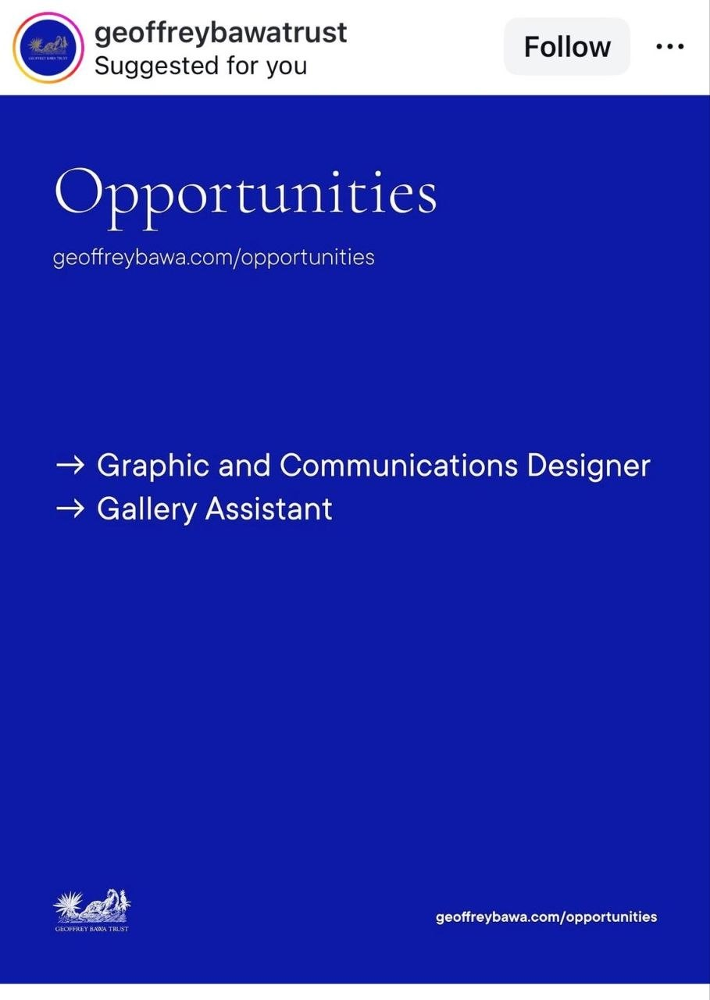
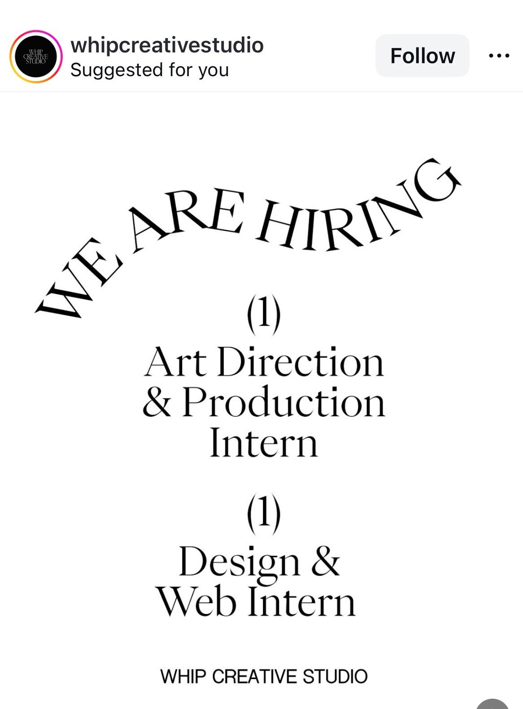
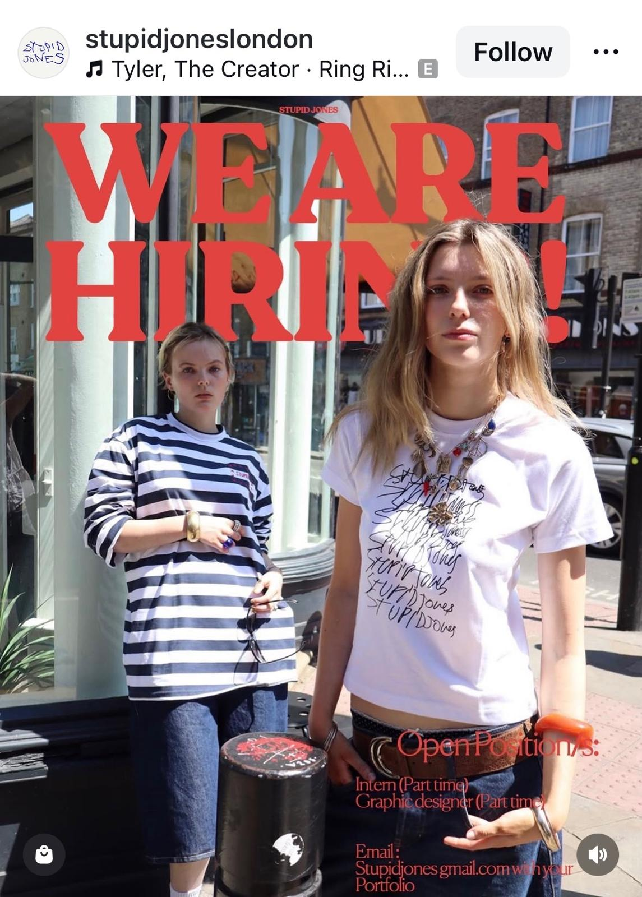
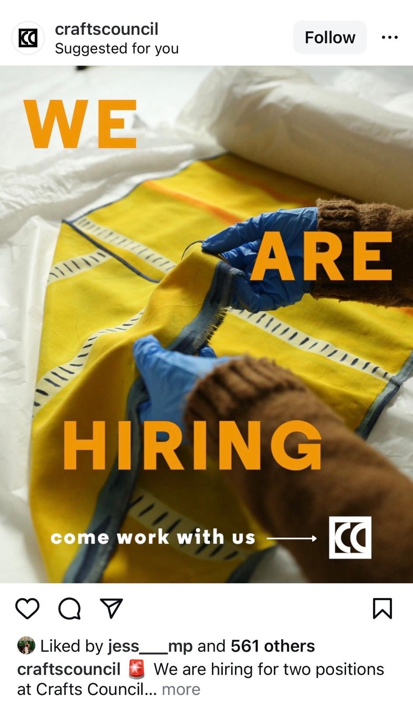

Focus here first
The strongest fits. Best place to spend attention.
Worth reviewingMaybe / keep alive
Relevant opportunities that need judgment, not instant dismissal.
Low priorityWatch, don’t chase
Interesting institutions or roles that are not the right fit right now.
Expired / constrainedReference only
Good examples, weak timing, or practical blockers.
Unsorted / source itemsSee everything
Useful leads, source posts, and ambiguous items Maia should still be able to inspect directly.
High interest

2x4
High-interestActive / time-sensitive
Roles: Branding / Environments / Strategy Internships
Company: Multidisciplinary design studio with distinct Branding, Environments, and Strategy teams.
Why Maia may care: paid, in-person, 12-week studio internships with strong relevance to design thinking and creative development.
Worth reviewing

Geoffrey Bawa Trust
Worth reviewingConstrained
Roles: Gallery Assistant / Graphic and Communications Designer
Company: Sri Lankan cultural institution focused on architecture, arts, ecology, exhibitions, and publications.
Why Maia may care: strong exhibition/cultural fit, but real feasibility issues because the roles are Colombo-based and require legal eligibility to work in Sri Lanka.

Latin Elephant
Worth reviewingMixed timing
Roles: Network Coordinator / Project Officer
Company: London charity focused on migrant communities, urban change, public engagement, and cultural activity.
Why Maia may care: relevant organisation, but the actual roles lean more community/policy than pure creative or exhibition work.

The British Museum
Worth reviewingVerification needed
Role: Junior Graphic Designer
Company: Major UK museum and cultural institution.
Why Maia may care: strong cultural/design environment and junior creative role, but current live status is not fully confirmed.

Whip Creative Studio
Worth reviewingVerification needed
Roles: Art Direction & Production Intern / Design & Web Intern
Company: Design-led creative studio.
Why Maia may care: one of the strongest conceptual fits in the hold batch, with role titles that map directly onto Maia’s interests.

Imagineers Film
Worth reviewingVerification needed
Roles: Junior Creative / Creative Intern
Company: Film or creative-media company with directly creative junior roles.
Why Maia may care: explicit early-career creative roles and a portfolio-based application route make this more relevant than many generic listings.

Stupid Jones
Worth reviewingVerification needed
Roles: Intern / Graphic Designer
Company: London-based creative or fashion-adjacent studio / brand.
Why Maia may care: junior creative framing and graphic design relevance make it a plausible keep-alive opportunity.

Vivienne Westwood
Worth reviewingAdjacent fit
Role: Showroom Intern
Company: Major fashion house with strong visual and cultural identity.
Why Maia may care: not a perfect lane match, but a paid London opportunity in a serious aesthetic environment is still worth seeing.
Low priority

Crafts Council
Low priorityLive roles
Roles: Director of Marketing, Communications & Audiences / Senior Community and Memberships Manager
Company: Major UK cultural institution focused on craft, learning, collections, and public programming.
Why Maia may care: great institution, wrong level and wrong role type for her right now.
Expired / constrained

Raw Daisies
Worth reviewingExpired
Roles: Marketing / Audio-Video / Merch Intern
Company: Independent creative production company working across film, theatre, events, fashion, and merch.
Why Maia may care: useful creative-media reference case discovered through Instagram, but likely weaker due to remote lean and expired timing.
Unsorted / source items
Creative Lives in Progress
Source itemNot a job post
Type: Discovery source / promo post
What it is: a Creative Lives in Progress post calling for UK-based emerging creatives to share their work, rather than a normal job listing.
Why Maia may care: still potentially useful for visibility, discovery, and network access, even though it should not be confused with a standard internship or role.
Status: keep visible for Maia to judge, but do not rank as a normal opportunity.
Maynard
Hold / unclearThin details
Type: Screenshot-level lead
What it is: a promising UK design-studio hiring signal, but the visible screenshot does not expose enough role detail yet.
Why Maia may care: good studio signal and worth seeing, even before full clarification.
Manual
Hold / unclearNeeds source recovery
Type: Screenshot-level lead
What it is: a summer internship lead surfaced through an Open Roles / reel-style source, but not yet traced back cleanly to an original listing.
Why Maia may care: relevant enough to preserve, but too under-specified to rank confidently.
Meanwhile Space
Hold / unclearThin details
Type: Screenshot-level lead
What it is: a placemaking / community-space hiring signal with too little visible role detail to classify cleanly yet.
Why Maia may care: it may touch exhibition, cultural, or public-space work enough to deserve visibility before judgment.
Oh Boy Records
Hold / unclearThin details
Type: Culture-adjacent lead
What it is: an internship-style creative/music lead with incomplete visible detail.
Why Maia may care: not strong enough yet to promote, but worth keeping on the board so it is not lost.
The New Farm Centre
Hold / unclearModerate fit
Type: Partially relevant lead
What it is: a communications and design coordinator role with some design relevance, but unclear fit against Maia’s strongest lane.
Why Maia may care: she should still be able to inspect it directly instead of having it disappear because the fit is mixed.
Tate
Low priorityLive role
Type: Museum operations lead
What it is: an Art Handling Technician role at Tate, real and serious but much more operational than Maia’s core lane.
Why Maia may care: strong institution, but probably wrong function, so it should stay visible without pulling focus.
QUEERCIRCLE
Low priorityLive role
Type: Senior communications lead
What it is: a Digital Communications Lead opening in a culturally relevant organisation, but likely above Maia’s level and outside her strongest fit.
Why Maia may care: useful to see, but more as context than as a likely application target.
Frist Art Museum
ExpiredReference only
Type: Museum internship reference
What it is: a Summer 2026 internship lead from an art museum context that appears already expired.
Why Maia may care: useful as a reference case for the kind of museum opportunity worth spotting earlier next cycle.
Archived Dreams / Puma
Hold / unclearNot clearly a job
Type: Campaign / creative opportunity signal
What it is: an ambiguous Puma-related creative post that does not read like a standard role listing.
Why Maia may care: still relevant enough to preserve because unusual creative opportunities often arrive in messy formats.
How to use this
- Start with the overview.
- Open only the opportunities that seem worth attention.
- Separate fit from feasibility.
- Do not over-filter too early.
Legend
High-interest strong fit
Worth reviewing relevant but not top-tier
Low priority / expired / constrained useful context, not active focus